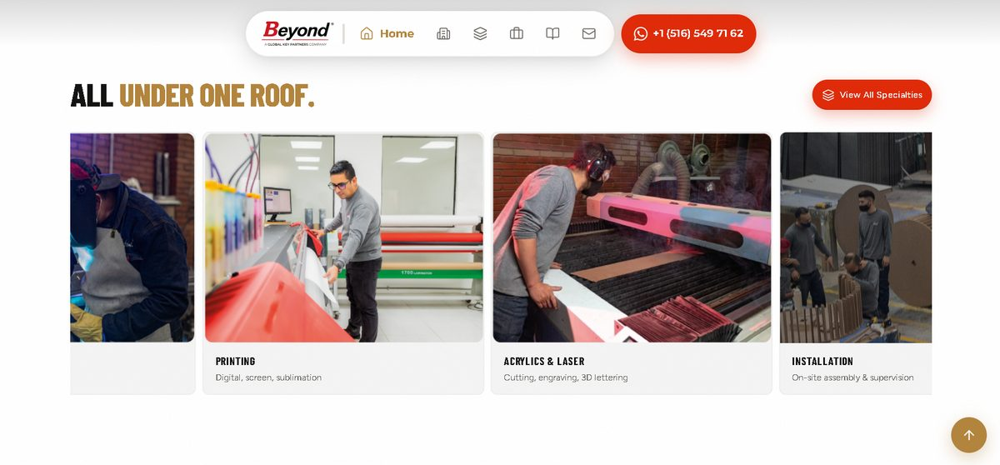

Cómo preparar tu negocio para el mercado de Estados Unidos: el caso real de Beyond SAS
Vender en Colombia y vender a compradores en Estados Unidos no son el mismo juego. Antes de que un cliente internacional te escriba, ya te evaluó por tu sitio web. Te contamos cómo fue el proceso real con uno de nuestros clientes, Beyond SAS, y qué puedes aplicar tú aunque tu negocio sea mucho más pequeño.

Por qué tu sitio web es lo primero que evalúa un comprador internacional
Cuando un comprador en Colombia te conoce, muchas veces ya llegó recomendado, te vio en una feria o alguien le habló bien de ti. Con un comprador en Estados Unidos casi nunca pasa eso: la primera y a veces única impresión es tu sitio web. Si se ve genérico, lento o solo está en español, es fácil que asuma que tu operación tampoco está lista para ese nivel.
No se trata de tener el sitio más caro. Se trata de que comunique, en segundos, que tu negocio puede sostener una relación comercial seria a otra escala.
El caso Beyond SAS
Beyond SAS es una empresa colombiana fundada en 2008, especializada en el diseño, ingeniería y fabricación de soluciones para exhibición comercial, arquitectura comercial y mobiliario especializado. Trabaja desde una planta propia de 5.000 m² en Bogotá y, en más de 15 años, ha desarrollado proyectos para marcas como Samsung, Apple, LG, Microsoft, Nestlé y Falabella.
Es decir: la capacidad industrial y la trayectoria ya estaban ahí. Lo que necesitaban era que su presencia digital dijera lo mismo.

Planta de Beyond SAS en Bogotá (5.000 m²)El reto
Beyond quería competir por cuentas internacionales, no solo mantener las que ya tenía en Colombia. Eso significaba que su sitio necesitaba tres cosas que antes no eran prioridad: estar en inglés de verdad (no una traducción improvisada), verse tan sólido como su planta de producción, y cargar rápido sin importar desde qué país se abriera.
La solución: un cambio de 360 grados, no un retoque
No fue traducir el sitio existente. Fue reconstruirlo desde cero:
- Desarrollo nuevo en Next.js y React, con animaciones 3D en tiempo real en el hero (Three.js / React Three Fiber) y transiciones con Framer Motion.
- Sitio bilingüe real (español e inglés), no una traducción automática pegada encima.
- Identidad visual reforzada para que la primera impresión comunicara la misma solidez que su operación industrial.
- Velocidad y estabilidad pensadas para visitantes desde cualquier país, no solo tráfico local.
 El nuevo sitio de Beyond SAS, en español e inglés
El nuevo sitio de Beyond SAS, en español e inglés
Puedes navegar el sitio real de Beyond SAS, con selector de escritorio/tablet/móvil, en el caso de estudio completo.
Qué cambia realmente cuando tu sitio se dirige a EE.UU.
No necesitas ser una empresa del tamaño de Beyond para aplicar esto. Si estás pensando en venderle a clientes en Estados Unidos, esto es lo que de verdad marca la diferencia:
- Inglés nativo, no traducido a último momento. Un texto mal traducido comunica lo contrario de lo que buscas: que no estás listo.
- Muestra con quién ya has trabajado. Nombres, logos o casos reales generan confianza más rápido que cualquier descripción de servicios.
- La velocidad importa más de lo que crees. Un sitio lento se siente como un negocio lento, así sea injusto.
- Ajusta el canal de contacto. El WhatsApp funciona muy bien en Latinoamérica; un comprador en EE.UU. suele esperar también un correo o formulario formal.
- Sé específico sobre tu capacidad real. Tamaño de planta, años de experiencia, certificaciones: información concreta, no solo adjetivos.
Un cambio de 360 no es solo "traducir la página"
El error más común es pensar que basta con un botón de idioma. Un sitio realmente listo para el mercado estadounidense suele implicar repensar el mensaje, el diseño y hasta la estructura de la información, no solo el idioma en el que está escrita.
¿Tu negocio está listo para venderle a clientes internacionales?
En Gessler Studio ayudamos a empresas colombianas a construir una presencia digital que compita en otros mercados, desde el rediseño de marca hasta el desarrollo del sitio.
Cuéntanos sobre tu proyecto